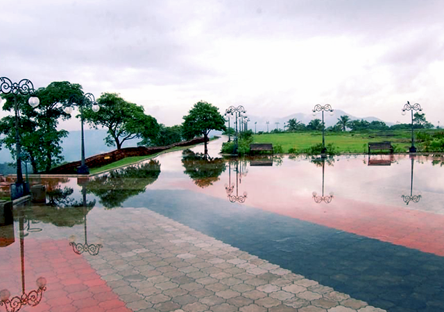
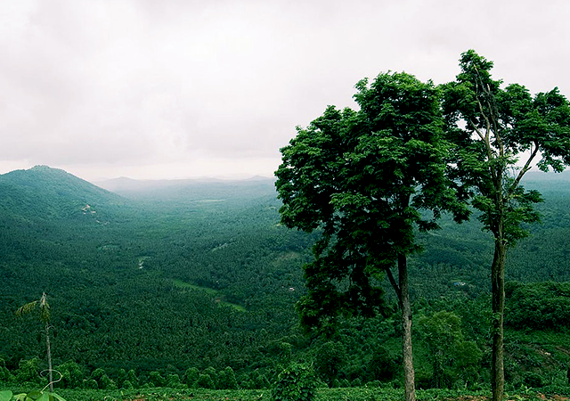
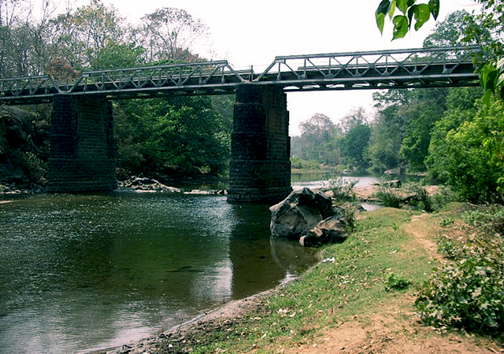
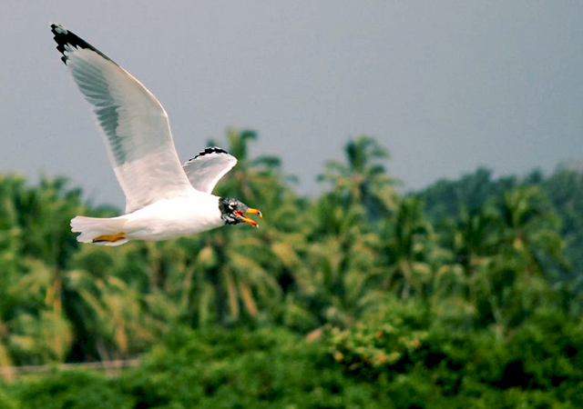
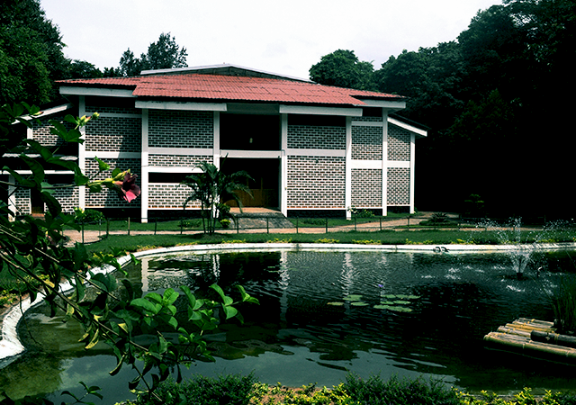

Malappuram district has a rich and vibrant history. The military headquarters of the Zamorins of Kozhikode since ancient times, this district was the site for many of the Mappila Revolts (uprising against the British East India Company in Kerala) between 1792 and 1921. Malappuram literally means a land atop hills and the region is enriched by three great rivers flowing through it - the Chaliyar, Kadalundi and the Bharathapuzha.
1.Kottakkunnu
Kottakkunnu is a hilly garden known as the Marine drive of Malappuram. It is one of the highly earning tourist destinations here. It is famous for the ruins of an old fort, which is believed to be the first fort constructed by the Zamorins of Kozhikode.Kottakkunnu is located at the crest of the Cantonment Hill near the District Collectorate in the heart of Malappuram city. The tourism department has made this scenic table-top location a one-stop destination for all kinds of entertainment.

2.Arimbra Hills
Known as Mini Ooty, the Arimbra hills is the favourite location among locals. It is located at a height of 1050 ft above sea level. This hill got the nickname Mini Ooty as it resembles Ooty – one of the famous hills stations in India.The travelling distance to Mini Ooty is 9 kms from Malappuram towards Kozhikode. The topsy-turvy, twisting road to the hills will give you a soul-stirring experience.

3.Nedumkayam
Nedumkayam situated about 15km from Nilambur in Malappuram is not just a dense forest housing a variety of flora and fauna, it is also one of those amazing spots where you can experience nature in its resplendent glory.Wildlife enthusiasts, nature lovers and photographers will find a visit to Nedumkayam worthwhile. However, prior permission from forest authorities must be taken for entering the forest even though it is open to visitors.

4.Kadalundi Bird Sanctuary
The sanctuary is the abode of over 60 varieties of migratory birds and 100 varieties of native birds. From the month of November to April the migratory birds such as terns, seagulls, turn stones, green shanks, sand plovers and sandpipers can be seen in the sanctuary in large numbers.Tourists who visit Kadalundi can also witness a wide variety of fishes, mussels and crabs in and around water bodies and the mangroves found here is the shelter for otters and jackals.

5.Teak Museum
Considered as the first of its kind, the Teak Museum located at Nilambur is a treasure trove of historical, aesthetic and scientific aspects of Teak. It was established owing to the historical importance of the region.The key attraction of the Teak museum is the 480 years old teak tree stump which was brought from Nagarampara forest range in Kottayam. The museum provides the detailed description of the flower, fruit and natural regeneration of teak and also exhibits the prominent characteristics of these species of trees.
